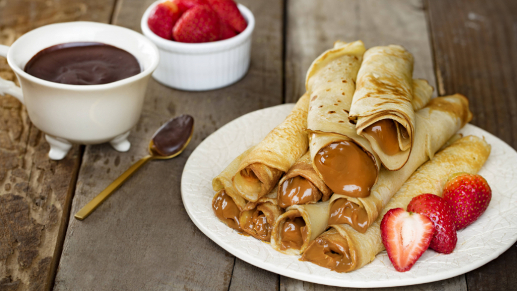

Panqueques
Ya sea para tener un desayuno diferente, de bajativo o un postre simple para disfrutar, el panqueque es un clásico de los clásicos que se disfruta cualquiera sea su preparación. ¡En esta página te enseñamos como prepararlo en simples pasos!
- Ingredientes
- 2 huevos
- 300g~ de harina sin polvo de hornear
- 450g~ de leche entera
- Pasos
- Agregar los huevos a la licuadora en velocidad alta
- Lentamente ir agregando harina y la leche, se comenzará a formar la masa. Si desea una mezcla más espesa puede
agregar más harina, pero nunca muy liquida sino no quedan buenos los panqueques.
- Una vez finalizada la mezcla poner a calentar a fuego medio-bajo una sartén con un poco de aceite. Mover el aceite
para que cubra toda la superficie y estamos listos para echar la mezcla.
- Dejar caer sobre el centro del sartén la mezcla hasta que se obtenga la cantidad deseada, puedes hacer panqueques
de todo tipo de tamaños y grosores! En el caso de que sea muy grueso, se recomienda poner una tapa para que se pueda
cocer bien la parte interior.
- Observar bien los bordes del panqueque ya que estos comenzarán a burbujear. Una vez que ya no burbujee levanta un
poco la masa y ve como está abajo. Si sientes necesario, lo puedes dejar un poco más para que agarre color, pero ya
estará listo para dar vuelta. Al darlo vuelta debes tener en mente que ya está casi cocida la masa por lo que
deberás poner un poco más de atención e ir revisando cada 30s aproximadamente.
- ¡Listo! ¡Tus panqueques están listos para ser devorados!
